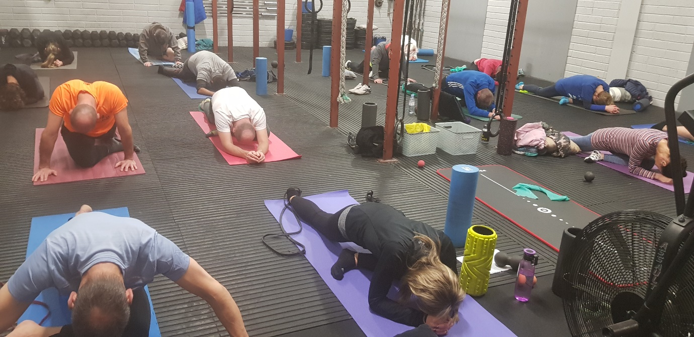

ALI DORGAN NUTRITION & NEUROMUSCULAR SPORTS THERAPIST
Alis Nutrition and Sports Therapy supports you to reach your optimal health and well-being. Using her own knowledge, qualifications and extensive experience Ali will guide you to reach your goals. Ali prides herself in ongoing learning and development, honesty and accountability.
Services
Neuromuscular Sports Therapy
Ring or text
087 7727580
to book your appointment now
The session will last an hour and will include hands on work with the client to improve mobility, reduce pain and improve function. The session will include massage and mobilisation. Ali also uses Dry Needling (Acupuncture) and cupping in some of her treatments to aid recovery and prevention. Dry needling is very effective for chronic long-term pain, headaches, TMJ, neck and shoulder tension, calf and plantar fascia issues, glute pain, chronic mid and lower back pain.
You will be advised on stretching and strengthening exercises to progress you healing.
More text here
All children under the age of 16 must be accompanied by a parent or guardian. Children over 16 must have parents’ permission to attend.
Ali Dorgan HDip. Nueromuscular Therapy and Orthopaedic Sports Massage
Nutritional Therapy
Download this questionaire to book a sessionNutritional Therapy is for everyone, it is centred on supporting all aspects of a person’s health and wellbeing: digestion, immune health, energy and blood sugar management, toxin removal and elimination, circulation and transport, hormonal function and susceptibility to food responses.
We look at all aspects of a client’s life from stress, lifestyle factors, past medical history and previous life challenges, family history and genetic predisposition.
Ali Dorgan Dip NT, BA Soc. Sc. Member NTOI, Member Thyroid Nutrition Ireland.
Fine Print
Classes
Fine Print
TREATMENTS
- Neuromuscular Therapy for sports injuries, pre-event and post event treatments
- Rehabilitation post-surgery and injury
- Guidance on improved daily function and improved mobility
- Dry needling for injuries, pain relief, TMJ, headaches and strains
- Cupping for muscle tension and restrictions
- Corrective exercises to correct imbalances
- Deep tissue massage
- Relaxing massage if requested
NUTRITION THERAPY
- Diabetes
- Cholesterol
- Digestive Issues
- Food intolerances
- IBS and IBD
- Fatigue
- Thyroid Health
- Brain health and mood
- Headaches
- Inflamation and joint pain
- Autoimmune conditions
- Skin conditions
- Fertility and Pregnancy health
- Wellness and Sports Performance
Or contact me through one of the following
FAQ
Dry needling is a technique using acupuncture needles in the area of a trigger point within a muscle. The trigger points are little nodules in taut bands of muscle. Taut bands shorten the muscle inhibiting muscle function. Dry needling releases the taut bands and reduces the pain caused by Trigger Points. Dry needling is more specific than trigger point therapy and is very effective with chronic active trigger points. The client will feel a localised twitch response then the dry needle activates the nodule, and this is the process engaging the nervous system to relax the affected area.
The second questions answer is . . . . .
The third questions answer is . . . . .
The fourth questions answer is . . . . .